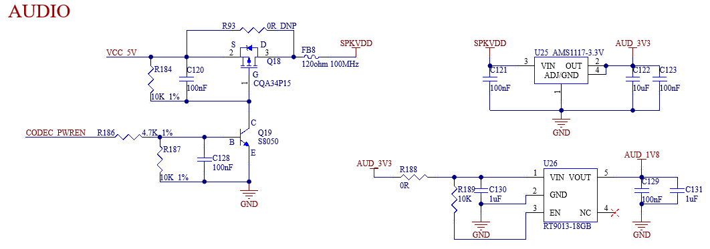

00_OK-MA35-S21 硬件手册
发布版本：V1.0
日期：2024-12-10
文件密级：□绝密 □秘密 □内部资料 ■公开
免责声明
本手册版权归保定飞凌嵌入式技术有限公司所有。未经本公司的书面许可，任何单位和个人无权以任何形式复制、传播、转载本手册的任何部分，违者将被追究法律责任。
保定飞凌嵌入式有限公司所提供的所有服务内容旨在协助用户加速产品的研发进度，在服务过程中所提供的任何程序、文档、测试结果、方案、支持等资料和信息，都仅供参考，用户有权不使用或自行参考修改，本公司不提供任何的完整性、可靠性等保证，若在用户使用过程中因任何原因造成的特别的、偶然的或间接的损失，本公司不承担任何责任。
概 述
本手册以使用户快速熟悉产品，了解接口功能和功能配置为目的，主要讲述了开发板接口功能，接口介绍，产品功耗，以及使用过程中出现的一些问题如何排查。在说明过程中，对一些命令进行了注释，方便用户理解，以实用够用为主。涉及到引脚功能复用、硬件问题排查方法等请参考飞凌提供的《OK-MA35-S21引脚复用对照表》和《OK-MA35-S21设计指南》。
本手册一共分为4部分：
第一部分CPU整体概述，简单介绍了CPU性能和应用行业；
第二部分核心板的整体介绍，包括连接器引脚的相关说明和功能介绍；
第三部分开发板的整体介绍，分为多个章节介绍，包括了硬件原理和简单的设计思路两大部分；
第四部分产品的功耗及其他说明，主要描述板子的功耗方面表现和其他注意事项。
本手册中一些符号及格式的相关说明：
表现形式 |
含义 |
|---|---|
⁉️ |
注意或者是需要特别关注的信息，一定要仔细阅读 |
📚 |
对测试章节做的相关说明 |
🛤️ |
表示相关路径 |
更新记录
日期 |
手册版本 |
核心板版本 |
底板版本 |
更新内容 |
|---|---|---|---|---|
20241210 |
V1.0 |
V1.0 |
V1.1及以上版本 |
初版 |
01_新唐 MA35D1简介
NuMicro MA35D1系列是Nuvoton面向工业控制和边缘网关推出的一款高端异构多核微处理器。它基于双64位ARM Cortex-A35内核，主频高达1GHz，并搭载一颗180MHz的ARM Cortex-M4内核，旨在满足Tiny AI/ML 边缘计算。
MA35D1 系列支持 16 位 DDR2/ DDR3 和 DDR3L SDRAM。
MA35D1 系列是一个可信任的系统，可以满足物联网产品的安全需求。它包括多个进阶的安全机制，例如新唐 TSI（Trusted Secure Island）一个独立的安全硬件单元、TrustZone、安全启动 (secure boot)、篡改检测、内建 AES、SHA、ECC、RSA 和 SM2/3/4 加解密加速器、及一个真随机数产生器 (TRNG)，并包含密钥储存 (Key Store) 和一次编程内存 (OTP memory)。所有安全相关的操作都在 TSI 中执行，保护具有敏感性和高价值的数据。这些安全特性也可以满足用户在 IEC 62443 认证方面的要求。
为满足高端 Edge IIoT Gateway 需求，MA35D1 系列集成 PDMA，其能够直接存取系统内存，无需 CPU 介入提升系统性能。同时，MA35D1 系列提供多组进阶和高速的通讯接口，如千兆以太网、SDIO3.0、高速 USB 2.0、CAN FD 等，可以应用于高端 Edge Gateway及新能源等应用需求。
对于人机接口应用，MA35D1 系列提供 LCD 显示控制器，分辨率可达 1920 x 1080 每秒 60 帧，及一个 2D 图形加速器、JPEG 和 H.264 译码器等，带来更好的图形人机接口效果和视频播放。
MA35D1处理器框图

02_FET-MA35-S2核心板介绍
2.1 FET-MA35-S2核心板外观图

核心板正面图

核心板背面图
2.2 FET-MA35-S2核心板尺寸图


结构尺寸：48mm×40mm，尺寸公差±0.13mm，更多尺寸信息参见DXF文件。
制版工艺：厚度1.2mm，12层沉金PCB。
核心板采用邮票孔+LGA封装形式，共引出260个引脚；邮票孔的引脚中心间距为1mm，单个引脚尺寸：1.4*0.6mm，LGA的球间距为1.5 mm，单个球直径为1mm。
核心板封装尺寸图见附录。
2.3 性能参数
2.3.1 系统主频
名称 |
规格 |
说明 |
|||
|---|---|---|---|---|---|
最小 |
典型 |
最大 |
单位 |
||
系统主频 |
— |
800 |
800 |
MHz |
— |
系统RTC时钟 |
— |
32.768 |
— |
KHz |
— |
2.3.2 供电参数
参数 |
引脚标号 |
规格 |
说明 |
|||
|---|---|---|---|---|---|---|
最小 |
典型 |
最大 |
单位 |
|||
主电源电压 |
VSYS |
4.5 |
5 |
5.5 |
V |
— |
空载电流 |
— |
442 |
mA |
请见附录功耗表 |
||
重载电流 |
— |
512 |
mA |
请见附录功耗表 |
2.3.3 工作环境
参数描述 |
规格 |
说明 |
||||
|---|---|---|---|---|---|---|
最小 |
典型 |
最大 |
单位 |
|||
|
存储环境 |
-40 |
25 |
+125 |
℃ |
|
工作环境 |
-40 |
25 |
+85 |
℃ |
工业级 |
|
存储环境 |
-40 |
25 |
+125 |
℃ |
||
湿度 |
工作环境 |
10 |
— |
90 |
％RH |
无凝露 |
存储环境 |
5 |
— |
95 |
％RH |
2.4 核心板接口资源
功能 |
数量 |
参数 |
|---|---|---|
USB 2.0 |
2 |
1路USB2.0 Host 1路USB 2.0 OTG |
RGB |
≤1 |
支持RGB888，最大分辨率1920*1080 |
CSI |
≤2 |
最大支持3M像素 |
Ethernet |
≤2 |
10/100/1000 Mbit/s 以太网支持 RGMII 和 RMII 接口 |
UART |
≤17 |
支持的最大波特率为9.5Mbps |
ISO7816 |
≤2 |
支持ISO-7816-3 |
QSPI |
≤2 |
可配置主从模式，支持最大时钟频率100MHz |
SPI |
≤4 |
可配置主从模式，支持最大时钟频率100MHz |
I2S |
≤2 |
可配置主从模式 |
I2C |
≤5 |
支持7bits和10bits地址模式，最高速率可达1 Mbit/s |
CANFD |
≤4 |
支持CAN-FD V1.0和CAN2.0 A/B； |
EPWM |
≤18 |
最多支持18通道EPWM |
SDIO |
≤1 |
SD0，4-bit，仅支持3.3V接口 |
ADC |
≤8 |
8路单端输入，12bit，500K SPS，支持4线或5线触摸 |
EADC |
≤8 |
8路单端或4路差分输入，12bit，4.7M SPS |
注：
表中参数为硬件设计或CPU理论值；
数量标注为最大。
2.5 FET-MA35-S2核心板引脚定义
2.5.1 FET-MA35-S2核心板引脚原理图
（核心板引脚原理图）


2.5.2 FET-MA35-S2核心板引脚功能说明
用户在有多种功能扩展需求时可参阅用户资料《FET-MA35-S2引脚复用表格》,但若需了解更详细的信息，建议用户查阅相关资料文档及芯片数据手册及参考手册。
2.6 核心板硬件设计说明
电源引脚
功能 |
信号名称 |
I/O |
默认功能 |
引脚号 |
|---|---|---|---|---|
电源 |
VDD5V |
电源输入 |
核心板电源供电引脚5V，底板提供电流不少于2.5A |
1,2 |
VBAT |
电源输入 |
核心板RTC供电3V |
166 |
|
GND |
地 |
核心板电源地和信号地，所有GND引脚都需要连接 |
功能控制引脚
功能 |
信号名称 |
I/O |
默认功能 |
引脚号 |
|---|---|---|---|---|
CPU复位 |
nRESET |
I |
核心板电源复位，低电平有效，用户不要在该引脚添加额外的容性负载，以免影响核心板正常启动 |
5 |
电源使能 |
EXTP_EN |
O |
控制底板外部电源的使能信号，由核心板输出，3.3V电平 |
46 |
BOOT选择 |
K1_PG0/L1_PG1/L4_PG2/M1_PG3 L3_PG4/N1_PG5/M4_PG6/M2_PG7 |
I |
核心板boot启动选项，底板不做处理时，核心板默认从emmc启动 |
6,7,8,9 10,11,12,13 |
调试串口 |
W1_UART0_TXD/U6_UART0_RXD G5_UART16_TXD/G3_UART16_RXD |
I/O |
A35调试串口 M4调试串口 建议用户保留对应端口功能 |
148,149 136,137 |
（包含最小系统框图）
FET-MA35-S2核心板已经将电源、复位监控电路、存储电路集成于一个小巧的模块上，所需的外部电路非常简洁,构成一个最小系统只需要 5V 电源即可运行,如下图所示:

最小系统原理图可以参见附录四。不过一般情况下，除最小系统外建议连接上一些外部设备，例如调试串口，镜像烧写端口，否则用户无法判断系统是否启动。做好这些后，再在此基础上根据飞凌提供的核心板默认接口定义来添加用户需要的功能。
核心板外围电路的设计可参见第三章的3.5节“OK-MA35-S2底板说明”。
03_飞凌OK-MA35-S21嵌入式开发平台介绍
3.1 OK-MA35-S21开发板接口图
飞凌OK-MA35-S21开发平台核心板和底板采用邮票孔+LGA的连接方式，主要接口如下图所示：


3.2 OK-MA35-S21开发板尺寸图

PCB尺寸：130mm×190mm。
固定孔尺寸：间距：120mm×180mm，孔径：3.2mm。
制版工艺：厚度1.6mm，4层PCB。
电源电压：直流12V。
OK-MA35-S21底板预留了2个直径3.2mm散热片的安装孔，用户可以根据现场环境选配安装散热片，散热片和核心板接触面请加一层绝缘的导热硅胶垫。飞凌自选的核心板散热片尺寸为：38mm×38mm×10mm，更多详细尺寸参见下图：

3.3 底板命名规范
ABC-D+IK:M
字段 |
字段描述 |
值 |
说明 |
|---|---|---|---|
A |
合格等级 |
PC |
原型样品 |
空白 |
大规模生产 |
||
B |
产品线标识 |
OK |
飞凌嵌入式开发板 |
C |
CPU名称 |
MA35 |
MA35 |
- |
分段标识 |
- |
|
D |
连接方式 |
Sx |
邮票孔 |
+ |
分段标识 |
+ |
此标识之后为配置参数部分 |
I |
运行温度 |
I |
-40 to 85℃ 工业级 |
K |
PCB版本号 |
11 |
V1.1 |
xx |
Vx.x |
||
:M |
厂家内部标识 |
:X |
此内容为厂家内部标识，对客户使用无影响 |
3.4 底板资源
功能 |
数量 |
参数 |
|---|---|---|
USB 2.0 |
2 |
1个USB HOST，USB Type A座子引出 1个USB OTG，USB Type-C座子引出，仅用作Device |
LCD |
1 |
支持RGB888，最大分辨率1920*1080@60fps |
LVDS |
1 |
通过LCD转换而来，通过DVI-I座子引出 |
Ethernet |
2 |
1千兆，1百兆，可向下自适应速率，双网口可以同时使用 |
TF Card |
1 |
开发板支持1路TF Card，兼容SD3.0 |
4G |
1 |
可外接mini PCIE接口的4G模块。 |
WiFi |
1 |
RL-UM02WBS-8723DU-V1.2 标准:IEEE 802.11b/g/n, BT V2.1/BT V3.0/BT V4.0。 |
Bluetooth |
1 |
|
Audio |
1 |
默认板载NAU88C22YG芯片； 支持耳机输出和MIC输入，分别在2个3.5mm 三段式耳机接口上引出； 支持2路1W8Ω喇叭输出，通过XH2.54白色端子引出 |
I2C |
4 |
2个用于挂载底板LCD触摸、音频 2个通过2 x 4 Pin 2.54mm间距插装插针引出，供用户外挂设备 |
PWM |
7 |
2个分别用于LCD调节背光亮度和BUZZER 5个通过2 x 4 Pin 2.54mm间距插装插针引出，供用户外挂设备 |
RTC |
1 |
板载独立RTC芯片，底板断电后可通过纽扣电池记录时间。 |
UART |
3 |
通过2 x 6Pin 2.54mm间距插装插针引出，供用户外挂设备 |
RS485 |
6 |
电气隔离，通过GPIO控制收发方向 |
CAN |
4 |
电气隔离，支持 CAN-FD，速率最高支持5Mbps |
SPI |
2 |
开发板通过2 x 6Pin 2.54mm间距插装插针引出，供用户外挂设备 |
QSPI |
1 |
板载 16MB QSPI NOR FLASH |
DEBUG UART |
2 |
A核UART0和M核UART16转成USB信号，通过Type-C接口引出，默认波特率115200 |
ADC |
8 |
8路单端输入，12bit，500K SPS，支持4线或5线触摸 |
EADC |
8 |
8路单端或4路差分输入，12bit，4.7M SPS |
KEY |
1 |
复位按键 |
SWD |
1 |
通过1 x 5Pin单排2.54mm间距插装插针引出 |
注：表中参数为硬件设计或CPU理论值；
3.5 OK-MA35-S21底板说明
注：下图中元件位号有“_DNP”标识的，代表此元器件默认不焊接。
注：本手册中原理图仅做接口说明，用户做硬件设计请参考源文件资料。
3.5.1 底板电源
开发板使用12V电源适配器供电，电源接口为DC005的插座。拨动开关S1为开发板的电源开关，按照底板丝印指示进行拨动。S1后级有TVS管进行静电防护，F1进行过流保护，D1与F1配合进行防反接保护。

VCC_12V通过U1降压至DCIN（5V）。DCIN直接给核心板供电，确保核心板能够先上电。

DCIN（5V）通过U2受控输出VCC_5V。U2受控于EXTP_EN，在核心板完成上电后，U2导通。VCC_5V为底板的部分5V供电设备供电。

VCC_5V通过U6降压至VCC_3V3，给底板所有的3.3V供电设备供电。

注意：
1.用户自行设计时，务必保证电源的上电时序即核心板输出的EXTP_EN作为底板DCDC电源的使能，从而保证核心板先上电，底板后上电。
2.升降压芯片的器件选型及外部布局需要参考对应的芯片手册，确保良好的电源回路。
3.5.2 复位按键
底板的K1为开发板的复位键，按下后可复位核心板上电源，实现给整板断电复位的功能。

注：nRESET引脚不用时，请悬空，不要做上下拉处理。
3.5.3 BOOT配置
底板使用8位拨码开关S2来选择系统启动方式。请调整好选项之后再给开发板上电。

启动方式：
eMMC，开发板程序从核心板板载EMMC启动；
TF，开发板使用TF卡引导系统，可以利用此种方式实现TF卡烧写镜像；
USB，一般是用来OTG下载镜像，开发板使用P11接口USB Type-C转接线连接电脑USB口，使用电脑上的程序给开发板刷写镜像；
Secure是安全启动，确保系统映像的真实性和完整性，避免执行植入系统的恶意软件或未经授权的软件。目前默认禁用此功能。
注：
1. PG0-PG7为启动相关引脚，这些引脚在CPU内部为默认下拉，与此同时，核心板上的PG0,PG2,PG6,PG7引脚添加10K进行上拉
2. 目前默认禁用secure boot 功能，且在只供电的情况下可从eMMC启动。用户需要根据自己的烧写、启动情况对底板的相关引脚进行处理。
3. 因这些引脚与启动相关，不建议用作GPIO，若需用作GPIO，注意引脚电平，不能影响启动项。
3.5.4 调试串口
核心板有2个调试串口，UART0用于A35调试，UART16用于M4调试。
为方便用户使用，使用USB转串口芯片CH342F将2个调试串口集成在1个USB接口上。

要使用调试串口，请首先在电脑上安装CH342F驱动，驱动下载链接：http://www.wch.cn/products/CH342.html
然后使用USB转Type-C线将开发板P6和电脑USB口连接，在电脑的设备管理器中，会生成2个COM口，其中A端口是A35调试串口，B端口是M4调试串口。

在电脑上打开调试终端工具，例如Putty，设置波特率115200，数据位8，无校验位，停止位1，选择正确的COM口，给开发板上电启动，就可以看到调试串口信息。
注：
为方便后期调试，请用户在自行设计底板时将此调试串口引出；
底板调试串口做了防漏电设计，建议用户参考此设计。
3.5.5 TF卡
开发板 TF Card 为 CPU 的 SD0 通道。

注：
强烈建议总线预留上拉电阻，否则可能影响TF卡烧写；
SD0_CLK引脚建议预留串阻及对地电容，电容默认空焊；
TF属于可热插拔设备，请做ESD防护；
SD信号需要做等长。
3.5.6 USB OTG接口
底板支持USB烧写，目前开发板电路只支持device模式，使用USB0时，注意HSUSB0_VBUSVLD参考开发板设计，OTG_ID为高时，USB0做device。
如用户只需要USB0做HOST，将OTG_ID拉到GND上，USB座子电源VBUS引脚需要供电5V，另外HSUSB0_VBUSVLD可以做普通IO使用。

注：
1.仅核心板原生的USB0支持USB烧写系统；
2.USB数据线都需要做90Ω差分阻抗；
3.请选择合适的ESD器件；
4.HSUSB0_VBUSVLD需要检测到电压才能正常启用USB功能。
3.5.7 LCD接口
开发板将RGB888通过54pin 0.5mm间距的FPC座引出（P23），最高分辨率可达1920*1080@60fps，默认适配飞凌7寸LCD屏。

3.5.8 LVDS接口
LVDS是由RGB888转换而来，只能二选一使用。
开发板将LVDS的信号用DVI-I（24+5引脚）座子引出，支持USB触摸。


注：
LVDS需要数据与时钟做等长.
阻抗要求：单端50Ω，差分100Ω.
3.5.9 Ethernet 接口
底板提供2路以太网接口，P46是千兆，P1是百兆。
千兆网口以RGMII与PHY芯片YT8521SH-CA（位号U31）相连，由RJ45插座引出（位号P46），插座型号为 FC-H021LNL，内置隔离变压器。
注：
1.RGMII信号的TX组和RX组需要在组内做等长；
2.RGMII和MDIO/MDC电平一致，可由CFG_LDO[1:0]配置；
3.需额外注意YT8521SH-CA的几路电源，电压不稳定会导致芯片不工作；
4.网络的模拟差分线需要做100Ω差分阻抗，组间等长要求≤1000mil；
5.建议至少使用4层板设计，保证走线有完整的参考层，否则会导致网络通讯失败；
6.建议该部分原理图和PCB直接复制开发板设计。


百兆网口以RMII与PHY芯片IP101GRI（位号U32）相连，由RJ45插座引出（位号P1），插座型号为FC-SH105GYNL，内置隔离变压器。


3.5.10 USB HOST 接口
开发板使用USB2.0HUB（FE1.1s-BQFN24BT）将CPU原生的一路USB2.0扩展为4路USB2.0，并将其中的1路以USB2.0Type-A座子引出（P16），另外3路分别接到了WiFi&蓝牙、miniPCIE和LVDS上。

注：
1.USB数据线都需要做90Ω差分阻抗;
2.请选择合适的ESD器件。
3.5.11 WiFi&Bluetooth
WiFi蓝牙二合一模块的型号是：BL-M8723DU1，标准:IEEE802.11b/g/n，蓝牙标准：TV2.1/BTV3.0/BTV4.0。

原理图中，WIFI_EN引脚是模块的电源开关引脚，输出低电平时，给模块供电。
天线接口在PCB正面右下角，P22是WIFI的天线，天线可发送和接收数据。
3.5.12 4G
开发板支持使用miniPCIE插座的4G模组，默认使用移远EC20。
使用MicroSIM卡，请注意插卡方向。


3.5.13 音频
开发板通过I2S0挂载NAU88C22YG芯片，提供一个标准3.5mm音频插座（P43，绿色），一个标准3.5mm麦克风插座（P42，粉色），NAU88C22YG内部自带的D类功放，输出端由两个XH2.54-2P白色插座P38、P40引出,可驱动两只8Ω喇叭，最高输出功率为1W，如果需要外接更大的功放，只能从耳机插座获取信号，不能从喇叭接口获取信号，片上耳机驱动器的输出功率为40mW（16Ω）。音频芯片电源受CODEC_PWREN控制，高电平有效。


注：
1.喇叭的功率来自D类功放，不是传统的模拟功放。
2.NAU88C22YG芯片分为数字区和模拟区，用户自行设计底板时请注意器件布局；
3.请将芯片的供电电源处理干净，对降低音频底噪有帮助
3.5.14 CAN
开发板提供4路CAN，支持CAN-FD。2pin-2.54mm间距的插针是接短路跳线帽，用于CAN总线上的120Ω端接电阻，与插针并联0R空焊的电阻为预留设计，有稳定性要求的用户可以焊接此电阻代替跳线帽。
P44接线端子引出，使用CAN通讯时建议将设备共地。


3.5.15 RS485
开发板提供6路RS485。2pin-2.54mm间距的插针是接短路跳线帽，用于RS485总线上的120Ω端接电阻，与插针并联0R空焊的电阻为预留设计，有稳定性要求的用户可以焊接此电阻代替跳线帽。
P29接线端子引出，使用RS485通讯时建议将设备共地。


注：
1．MAX3485AEASA+需要手动控制收发方向，流控引脚最好选用对应UART的RTS引脚，流控在驱动层就已经集成好了，如果选择GPIO，需要在应用层做工作。
2．开发板UART2和UART11流控引脚使用串口对应的RTS，串口UART1、UART10、UART14、UART15的流控引脚使用的GPIO。
3.5.16 普通串口
底板引出3个普通串口，电平为3.3V，使用2*6pin-2.54mm间距的插装插针引出，供用户外挂设备。

3.5.17 SWD 接口
底板通过P13将SWD接口引出，引脚间距2.54mm，如果不使用此功能，将该部分引脚悬空处理即可。

3.5.18 RTC
底板通过I2C2外挂RTC设备，并通过D4实现VCC_3V3和纽扣电池兼容供电，即在底板断电后，纽扣电池可以为RTC芯片保持供电。硬件做了RX8010SJ和PCF8563T/5兼容设计。

注：
当使用核心板板载RTC功能时，需在VBAT（166）引脚提供3.3V电源，且此电源断电可保持。
3.5.19 SPI
开发板提供2路SPI，通过P9使用2*6pin-2.54mm间距的插装插针引出，供用户外挂设备。

3.5.20 ADC
开发板提供8路ADC，使用可调电阻来演示。ADC电压采样范围0~3.3V，支持12bit，500K SPS。

3.5.21 EADC
开发板提供8路EADC，使用可调电阻来演示。ADC电压采样范围0~3.3V，支持12bit，4.7M SPS。

3.5.22 BUZZER
开发板设计1个蜂鸣器，由EPWM控制，用户可以自定义其功能。

3.5.23 QSPI NorFlash
底板板载一颗QSPI_NorFlash。

3.5.24 EPWM
底板板载引出5个EPWM，电平为3.3V，使用2*4pin-2.54mm间距的插装插针引出，用户可以自定义其功能。

3.5.25 GPIO
底板板载引出部分GPIO，电平为3.3V，使用2.54mm间距的插装插针引出，用户可以自定义其功能。调试过程中通过插针取电源时，注意电平。

04_硬件设计指南
I2C要求
一组I2C总线上可以挂载多个从设备，请保证地址无冲突；
I2C总线上需要加上拉电阻，但不要使用多个电阻上拉；
请注意核心板端的I2C和从设备的I2C做电平匹配。VBAT引脚处理
当使用核心板板载RTC功能时，需在VBAT引脚提供3.3V电源，且此电源断电可保持。上电时序
强烈建议用户设计底板时使用核心板输出的EXTP_EN作为底板上电的使能，严格控制上电时序。否则可能会造成以下影响：
·通电阶段电流过大；
·设备无法启动；
·最坏情况，对处理器造成不可逆转的损坏。核心板不使用的信号引脚可以悬空，但请务必将所有的GND连接。
关于引脚IO漏电问题说明
在核心板上电之前，如果核心板信号引脚上有高电平灌电流，会给核心板上串电，最直观的现象就是能看到核心板的红色指示灯微亮，会导致上电顺序不对，最典型的就是串口漏电，所以与CPU直连的外设部分需要做防漏电设计。PG0-PG7启动相关引脚要求
PG0-PG7为启动相关引脚，这些引脚在CPU内部为默认下拉，与此同时，核心板上的PG0,PG2,PG6,PG7引脚添加10K进行上拉，默认禁用secureboot功能，且在只供电的情况下可从eMMC启动。用户需要根据自己的烧写、启动情况对底板的相关引脚进行处理。此外，因这些引脚与启动相关，不建议用作GPIO，若需用作GPIO，注意引脚电平，不能影响启动项。

调试串口硬件设计说明
UART0为A核调试串口，为方便后期调试，建议引出，做好防漏电措施；若使用M核，需引出UART16_TXD方便调试。SD卡硬件设计要求
SD卡的各路信号线需要加电阻上拉至3.3V，否则可能影响SD卡烧写；SD0_CLK引脚建议预留串阻及对地电容，电容默认空焊。HSUSB0_VBUSVLD引脚要求
D6_PF15引脚默认为HSUSB0_VBUSVLD功能，USB0用作device时，此引脚必须保持高电平，比如通过USB0烧写时；如果USB0用作host，此引脚可用作GPIO。T13_PJ5引脚要求
T13_PJ5引脚需要加10K电阻进行下拉。该T13_PJ5引脚禁止上拉，否则影响eMMC正常启动。RS485要求
当使用RS485，其流控引脚最好选用对应UART的RTS引脚，流控在驱动层就已经集成好了，如果选择GPIO，需要在应用层做工作。ADC/EADC要求
ADC0-7及EADC0-7默认输入范围为0-3.3V，需注意输入电压范围。自制底板的PCB布局要求
为保证核心板邮票孔焊盘的爬锡良率，底板钢网制作时外扩了邮票孔的开孔区域以保证锡膏量，如下图灰色部分所示。因此底板布局时，需注意其他器件焊盘远离核心板钢网外扩区域，同时，核心板钢网外扩区域不允许打孔，以免漏锡，影响焊接质量。

自制底板PCB的表面处理工艺要求
底板表面处理工艺建议化学沉金，因为核心板和底板采用邮票孔+LGA的连接方式，采用化学沉金工艺，底板单独存储后，可以降低焊接难度，强烈建议核心板与底板贴片器件同步送入贴片机焊接，如果底板是双面布件，则建议用户核心板的所在面最后再过炉，避免核心板在底板上二次过炉。自制底板的钢网要求
告知工厂：图片标识出核心板的钢网不需要处理，补偿等已经做好，其他区域可以修改。
例如：

核心板抗振动要求
如果客户产品有抗振动要求，建议客户增加核心板所在区域与外壳的硬连接，避免振动时核心板所在区域发生形变，焊点因应力疲劳发生断裂，进而影响产品稳定运行。
05_OK-MA35-S21开发板Linux系统整机功耗表
编号 |
测试项目 |
核心板功率（W） |
开发板功率 （含核心板）（W） |
|---|---|---|---|
1 |
无负载启动峰值功率 |
2.21W |
3.7W |
2 |
CPU压力+内存+emmc读写压力测试 |
2.06W |
4.55W |
3 |
带载LVDS+4G+视频编码 |
2.02W |
5.03W |
4 |
带载LVDS+4G+视频编码+CPU压力+内存+emmc读写压力测试 |
2.56W |
5.56W |
注：
1、峰值电流:启动过程中的最大电流值；
2、稳定值电流:启动后停留在开机界面时的电流值 ；
3、功耗仅供参考。
06_最小系统原理图
最小系统包括核心板，电源，调试串口，系统镜像烧写接口，boot启动项电路。


上图仅为示意图，具体连接情况请见源文件原理图。为满足核心板的正常工作，除电源VDD5V外，还需要HSUSB0，方便进行系统烧写；UART0部分电路，方便确认系统是否工作正常，同时方便调试；BOOT部分电路进行系统启动。